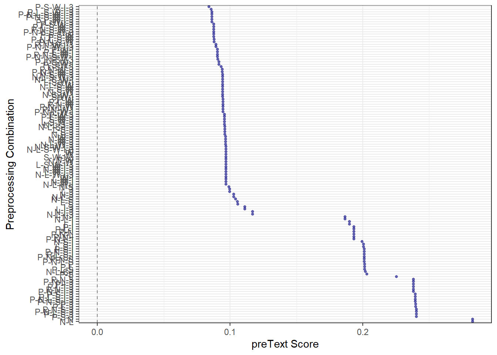
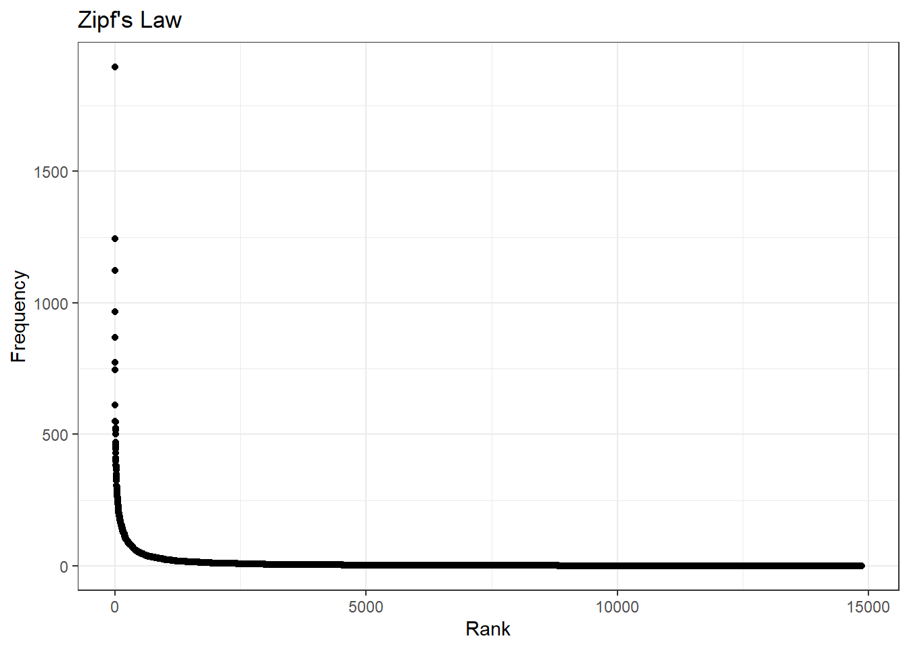
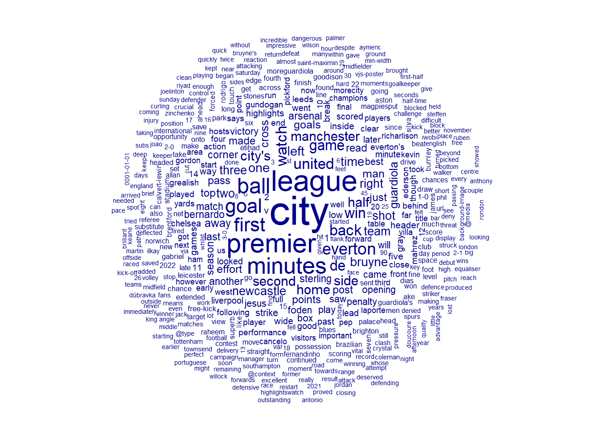
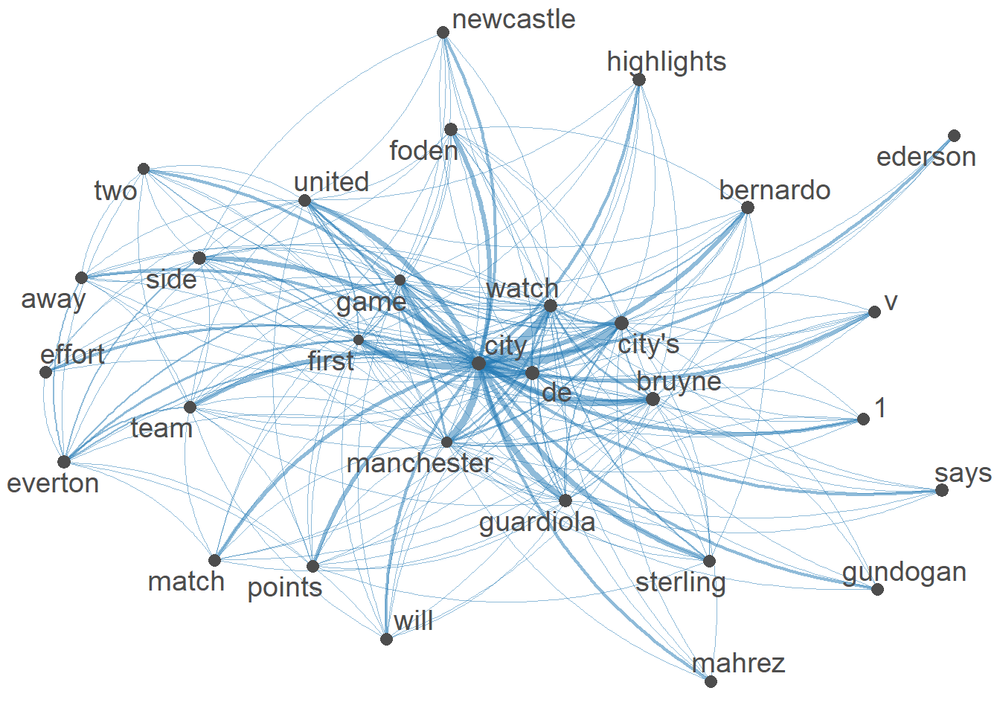
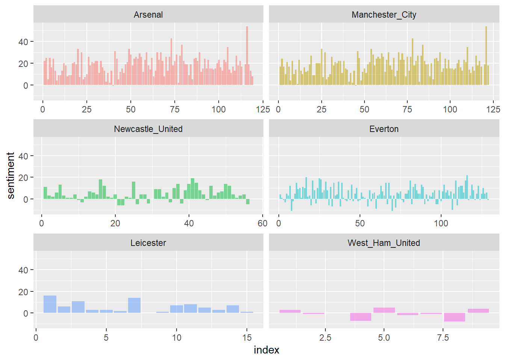
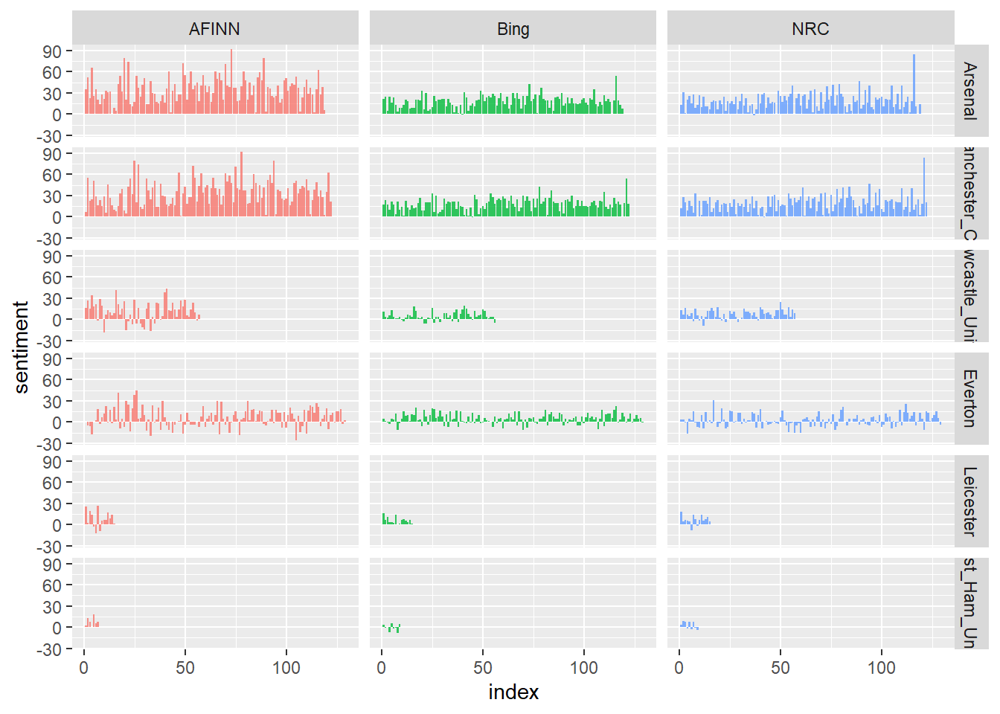
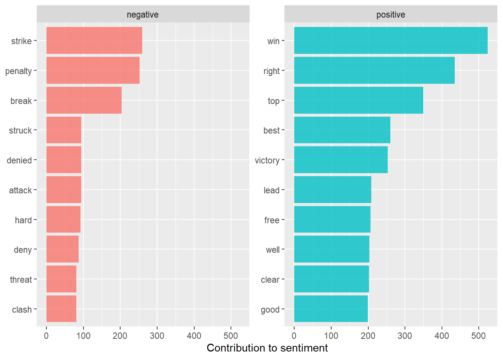

Code
knitr::opts_chunk$set(echo = TRUE)knitr::opts_chunk$set(echo = TRUE)library(rvest)
library(tidyverse)
library(polite)
library(stringr)
library(preText)
library(quanteda)
library(quanteda.textplots)
library(tidytext)
library(tm)
library(SentimentAnalysis)
library(quanteda.dictionaries)There are 6 teams included in this study 2 from the top of the table 2 from the middle and 2 from the bottom. They are already in that order from top to bottom. Data needed to be web scraped from a page called match report. This page was located on each teams official website and this page included information about the match, statistics, and quotes from both the players and the managers. This data will include this current season and all of last season.
A. Does Premier League soccer teams language change over the course of the season?
B. Does the language grow in correlation to the success of the season?
The hypothesis will be tested as follows:
The Premier league soccer team language does not change over the course of the season.
The Premier league soccer team language does change over the course of the season.
The language does not correlate to the success of the season.
The language does correlate to the success of the season.
flowchart LR
A[Web Scrape] --> B(Preprocess)
B --> C[Organize]
C --> D(TDM)
D --> E[Sentiment Analysis]
E --> F[Research Question 1]
F --> G{Conclusion}
D --> H[DTM]
H --> I[Document Similarity]
I --> J[Research Question 2]
J --> G{Conclusion}

Here is the beginning of the web scraping process. I was unable to find a way to make the web scraper search for one object then proceed to the next page where you could then scrape whats inside. For the time being I decided to manually web scrape the information. The tidying process is the real issue as there are many unwanted variables inside. For example there are a lot of /n’s.
## The function is working at reading in the data however. parts of the cleaning process are failing and I am thinking this is because I am not specifying the create values
# I need to remove punct, capitalization, stopwords like (the, a ',') finish repeating the process to all teams and adjusting the function until it grabs every single problem once this is complete we should be able to tokenize then corpus and work with the data
Web_scrape_function_Arsenal <- function(url,css,data) { # creating function to repeat web scrape
url <- read_html(url)
css <- (".article-body")
data <- url %>%
html_node(css = css) %>%
html_text2()
}
tidy_function <- function(data){data <- str_replace_all(data, "\n", "####") %>%
str_replace_all("/n", "####") %>%
str_remove_all("/n") %>%
str_remove_all("\n") %>%
str_remove_all(" - ") %>%
str_replace_all("'\'", "#") %>%
str_replace_all("[0-9] of [0-9]To buy official Arsenal pictures visit Arsenal Pics", "#") %>%
str_remove("WHAT HAPPENED") %>%
str_remove_all("[0-9] of 42To buy official Arsenal pictures visit Arsenal Pics") %>%
str_remove_all("[0-9] of 29To buy official Arsenal pictures visit Arsenal Pics") %>%
str_remove_all("[0-9] of 45To buy official Arsenal pictures visit Arsenal Pics") %>%
str_remove_all("[0-9] of 38To buy official Arsenal pictures visit Arsenal Pics") %>%
str_remove_all("[0-9] of 32To buy official Arsenal pictures visit Arsenal Pics") %>%
str_remove_all("[0-9] of 36To buy official Arsenal pictures visit Arsenal Pics") %>%
str_remove("Play videoWatch Arsenal video online05:24Highlights | Crystal Palace 0-2 Arsenal - bitesize") %>%
str_remove("111111111122222222223333333333444") %>%
str_remove("111111111122222222223333333") %>%
str_remove("11111111112222222222") %>%
str_remove_all("\\(") %>%
str_remove_all("\\)") %>%
str_replace_all("||", "#") %>%
str_remove_all("'Play videoWatch Arsenal video online02:17Mikel Arteta post-match interview | Crystal Palace 0-2 Arsenal | Premier LeagueArteta: \'") %>%
str_remove_all("\"read everything from his press conferencePlay videoWatch Arsenal video online02:07William Saliba post-match interview || Premier LeagueSaliba:") %>%
str_remove_all("#") %>%
unlist()
}
# Running the tidy function twice to clean up certain parts that are getting missed the first time for some reason and this is a temporary fix.
Arsenal_url <- "https://www.arsenal.com/fixture/arsenal/2022-Aug-05/crystal-palace-0-2-arsenal-match-report"
Match_1 <- Web_scrape_function_Arsenal(Arsenal_url)
Match_1 <- tidy_function(Match_1)
Match_1 <- tidy_function(Match_1)
Arsenal_url <- "https://www.arsenal.com/fixture/arsenal/2022-Aug-13/arsenal-4-2-leicester-city-match-report"
Match_2 <- Web_scrape_function_Arsenal(Arsenal_url)
Match_2 <- tidy_function(Match_2)
Match_2 <- tidy_function(Match_2)
Arsenal_url <- "https://www.arsenal.com/premier-league-match-report-bournemouth-odegaard-saliba-jesus"
Match_3 <- Web_scrape_function_Arsenal(Arsenal_url)
Match_3 <- tidy_function(Match_3)
Match_3 <- tidy_function(Match_3)
Arsenal_url <- "https://www.arsenal.com/premier-league-match-report-fulham-odegaard-gabriel"
Match_4 <- Web_scrape_function_Arsenal(Arsenal_url)
Match_4 <- tidy_function(Match_4)
Match_4 <- tidy_function(Match_4)
Arsenal_url <- "https://www.arsenal.com/match-report-aston-villa-premier-league-martinelli-jesus"
Match_5 <- Web_scrape_function_Arsenal(Arsenal_url)
Match_5 <- tidy_function(Match_5)
Match_5 <- tidy_function(Match_5)
Arsenal_url <- "https://www.arsenal.com/fixture/arsenal/2022-Sep-04/manchester-united-3-1-arsenal-match-report"
Match_6 <- Web_scrape_function_Arsenal(Arsenal_url)
Match_6 <- tidy_function(Match_6)
Match_6 <- tidy_function(Match_6)
Arsenal_url <- "https://www.arsenal.com/premier-league-match-report-brentford-saliba-jesus-vieira"
Match_7 <- Web_scrape_function_Arsenal(Arsenal_url)
Match_7 <- tidy_function(Match_7)
Match_7 <- tidy_function(Match_7)
# Arsenal 2021 season
Arsenal_url <- "https://www.arsenal.com/fixture/arsenal/2021-Jul-28/arsenal-4-1-watford-match-report"
Match_1_2021 <- Web_scrape_function_Arsenal(Arsenal_url)
Match_1_2021 <- tidy_function(Match_1_2021)
Match_1_2021 <- tidy_function(Match_1_2021)
Arsenal_url <- "https://www.arsenal.com/fixture/arsenal/2021-Aug-01/arsenal-1-2-chelsea-match-report"
Match_2_2021 <- Web_scrape_function_Arsenal(Arsenal_url)
Match_2_2021 <- tidy_function(Match_2_2021)
Match_2_2021 <- tidy_function(Match_2_2021)
Arsenal_url <- "https://www.arsenal.com/fixture/arsenal/2021-Aug-08/tottenham-hotspur-1-0-arsenal-match-report"
Match_3_2021 <- Web_scrape_function_Arsenal(Arsenal_url)
Match_3_2021 <- tidy_function(Match_3_2021)
Match_3_2021 <- tidy_function(Match_3_2021)
Arsenal_url <- "https://www.arsenal.com/fixture/arsenal/2021-Aug-13/brentford-fc-2-0-arsenal-match-report"
Match_4_2021 <- Web_scrape_function_Arsenal(Arsenal_url)
Match_4_2021 <- tidy_function(Match_4_2021)
Match_4_2021 <- tidy_function(Match_4_2021)
Arsenal_url <- "https://www.arsenal.com/fixture/arsenal/2021-Aug-22/arsenal-0-2-chelsea-match-report"
Match_5_2021 <- Web_scrape_function_Arsenal(Arsenal_url)
Match_5_2021 <- tidy_function(Match_5_2021)
Match_5_2021 <- tidy_function(Match_5_2021)
Arsenal_url <- "https://www.arsenal.com/fixture/arsenal/2021-Aug-28/manchester-city-5-0-arsenal-match-report"
Match_6_2021 <- Web_scrape_function_Arsenal(Arsenal_url)
Match_6_2021 <- tidy_function(Match_6_2021)
Match_6_2021 <- tidy_function(Match_6_2021)
Arsenal_url <- "https://www.arsenal.com/fixture/arsenal/2021-Sep-11/arsenal-1-0-norwich-city-match-report"
Match_7_2021 <- Web_scrape_function_Arsenal(Arsenal_url)
Match_7_2021 <- tidy_function(Match_7_2021)
Match_7_2021 <- tidy_function(Match_7_2021)
Arsenal_url <- "https://www.arsenal.com/fixture/arsenal/2021-Sep-18/burnley-0-1-arsenal-match-report"
Match_8_2021 <- Web_scrape_function_Arsenal(Arsenal_url)
Match_8_2021 <- tidy_function(Match_8_2021)
Match_8_2021 <- tidy_function(Match_8_2021)
Arsenal_url <- "https://www.arsenal.com/fixture/arsenal/2021-Sep-26/arsenal-3-1-tottenham-hotspur-match-report"
Match_9_2021 <- Web_scrape_function_Arsenal(Arsenal_url)
Match_9_2021 <- tidy_function(Match_9_2021)
Match_9_2021 <- tidy_function(Match_9_2021)
Arsenal_url <- "https://www.arsenal.com/fixture/arsenal/2021-Oct-02/brighton-0-0-arsenal-match-report"
Match_10_2021 <- Web_scrape_function_Arsenal(Arsenal_url)
Match_10_2021 <- tidy_function(Match_10_2021)
Match_10_2021 <- tidy_function(Match_10_2021)
Arsenal_url <- "https://www.arsenal.com/fixture/arsenal/2021-Oct-18/arsenal-2-2-crystal-palace-match-report"
Match_11_2021 <- Web_scrape_function_Arsenal(Arsenal_url)
Match_11_2021 <- tidy_function(Match_11_2021)
Match_11_2021 <- tidy_function(Match_11_2021)
Arsenal_url <- "https://www.arsenal.com/fixture/arsenal/2021-Oct-22/arsenal-3-1-aston-villa-match-report"
Match_12_2021 <- Web_scrape_function_Arsenal(Arsenal_url)
Match_12_2021 <- tidy_function(Match_12_2021)
Match_12_2021 <- tidy_function(Match_12_2021)
Arsenal_url <- "https://www.arsenal.com/fixture/arsenal/2021-Oct-30/leicester-city-0-2-arsenal-match-report"
Match_13_2021 <- Web_scrape_function_Arsenal(Arsenal_url)
Match_13_2021 <- tidy_function(Match_13_2021)
Match_13_2021 <- tidy_function(Match_13_2021)
Arsenal_url <- "https://www.arsenal.com/fixture/arsenal/2021-Nov-07/arsenal-1-0-watford-match-report"
Match_14_2021 <- Web_scrape_function_Arsenal(Arsenal_url)
Match_14_2021 <- tidy_function(Match_14_2021)
Match_14_2021 <- tidy_function(Match_14_2021)
Arsenal_url <- "https://www.arsenal.com/fixture/arsenal/2021-Nov-20/liverpool-4-0-arsenal-match-report"
Match_15_2021 <- Web_scrape_function_Arsenal(Arsenal_url)
Match_15_2021 <- tidy_function(Match_15_2021)
Match_15_2021 <- tidy_function(Match_15_2021)
Arsenal_url <- "https://www.arsenal.com/fixture/arsenal/2021-Nov-27/arsenal-2-0-newcastle-united-match-report"
Match_16_2021 <- Web_scrape_function_Arsenal(Arsenal_url)
Match_16_2021 <- tidy_function(Match_16_2021)
Match_16_2021 <- tidy_function(Match_16_2021)
Arsenal_url <- "https://www.arsenal.com/arsenal-manchester-united-match-report-premier-league"
Match_17_2021 <- Web_scrape_function_Arsenal(Arsenal_url)
Match_17_2021 <- tidy_function(Match_17_2021)
Match_17_2021 <- tidy_function(Match_17_2021)
Arsenal_url <- "https://www.arsenal.com/fixture/arsenal/2021-Dec-06/everton-2-1-arsenal-match-report"
Match_18_2021 <- Web_scrape_function_Arsenal(Arsenal_url)
Match_18_2021 <- tidy_function(Match_18_2021)
Match_18_2021 <- tidy_function(Match_18_2021)
Arsenal_url <- "https://www.arsenal.com/arsenal-southampton-match-report-premier-league-lacazette"
Match_19_2021 <- Web_scrape_function_Arsenal(Arsenal_url)
Match_19_2021 <- tidy_function(Match_19_2021)
Match_19_2021 <- tidy_function(Match_19_2021)
Arsenal_url <- "https://www.arsenal.com/arsenal-west-ham-match-report-premier-league-martinelli-smith-rowe"
Match_20_2021 <- Web_scrape_function_Arsenal(Arsenal_url)
Match_20_2021 <- tidy_function(Match_20_2021)
Match_20_2021 <- tidy_function(Match_20_2021)
Arsenal_url <- "https://www.arsenal.com/fixture/arsenal/2021-Dec-18/leeds-1-4-arsenal-match-report"
Match_21_2021 <- Web_scrape_function_Arsenal(Arsenal_url)
Match_21_2021 <- tidy_function(Match_21_2021)
Match_21_2021 <- tidy_function(Match_21_2021)
Arsenal_url <- "https://www.arsenal.com/fixture/arsenal/2021-Dec-26/norwich-city-0-5-arsenal-match-report"
Match_22_2021 <- Web_scrape_function_Arsenal(Arsenal_url)
Match_22_2021 <- tidy_function(Match_22_2021)
Match_22_2021 <- tidy_function(Match_22_2021)
Arsenal_url <- "https://www.arsenal.com/arsenal-manchester-city-report-xhaka-gabriel-premier-league"
Match_23_2021 <- Web_scrape_function_Arsenal(Arsenal_url)
Match_23_2021 <- tidy_function(Match_23_2021)
Match_23_2021 <- tidy_function(Match_23_2021)
Arsenal_url <- "https://www.arsenal.com/premier-league-burnley-match-report-emirates-stadium"
Match_24_2021 <- Web_scrape_function_Arsenal(Arsenal_url)
Match_24_2021 <- tidy_function(Match_24_2021)
Match_24_2021 <- tidy_function(Match_24_2021)
Arsenal_url <- "https://www.arsenal.com/fixture/arsenal/2022-Feb-10/wolves-0-1-arsenal-match-report"
Match_25_2021 <- Web_scrape_function_Arsenal(Arsenal_url)
Match_25_2021 <- tidy_function(Match_25_2021)
Match_25_2021 <- tidy_function(Match_25_2021)
Arsenal_url <- "https://www.arsenal.com/match-report-emile-smith-rowe-bukayo-saka-premier-league-southampton"
Match_26_2021 <- Web_scrape_function_Arsenal(Arsenal_url)
Match_26_2021 <- tidy_function(Match_26_2021)
Match_26_2021 <- tidy_function(Match_26_2021)
Arsenal_url <- "https://www.arsenal.com/fixture/arsenal/2022-Feb-24/arsenal-2-1-wolves-match-report-0"
Match_27_2021 <- Web_scrape_function_Arsenal(Arsenal_url)
Match_27_2021 <- tidy_function(Match_27_2021)
Match_27_2021 <- tidy_function(Match_27_2021)
Arsenal_url <- "https://www.arsenal.com/premier-league-match-report-watford-odegaard-saka-martinelli"
Match_28_2021 <- Web_scrape_function_Arsenal(Arsenal_url)
Match_28_2021 <- tidy_function(Match_28_2021)
Match_28_2021 <- tidy_function(Match_28_2021)
Arsenal_url <- "https://www.arsenal.com/premier-league-match-report-leicester-city-thomas-partey-alexandre-lacazette"
Match_29_2021 <- Web_scrape_function_Arsenal(Arsenal_url)
Match_29_2021 <- tidy_function(Match_29_2021)
Match_29_2021 <- tidy_function(Match_29_2021)
Arsenal_url <- "https://www.arsenal.com/fixture/arsenal/2022-Mar-16/arsenal-0-2-liverpool-match-report"
Match_30_2021 <- Web_scrape_function_Arsenal(Arsenal_url)
Match_30_2021 <- tidy_function(Match_30_2021)
Match_30_2021 <- tidy_function(Match_30_2021)
Arsenal_url <- "https://www.arsenal.com/premier-league-match-report-bukayo-saka-aston-villa-top-four"
Match_31_2021 <- Web_scrape_function_Arsenal(Arsenal_url)
Match_31_2021 <- tidy_function(Match_31_2021)
Match_31_2021 <- tidy_function(Match_31_2021)
Arsenal_url <- "https://www.arsenal.com/fixture/arsenal/2022-Apr-04/crystal-palace-3-0-arsenal-match-report"
Match_32_2021 <- Web_scrape_function_Arsenal(Arsenal_url)
Match_32_2021 <- tidy_function(Match_32_2021)
Match_32_2021 <- tidy_function(Match_32_2021)
Arsenal_url <- "https://www.arsenal.com/premier-league-match-report-brighton-martin-odegaard-emirates-stadium"
Match_33_2021 <- Web_scrape_function_Arsenal(Arsenal_url)
Match_33_2021 <- tidy_function(Match_33_2021)
Match_33_2021 <- tidy_function(Match_33_2021)
Arsenal_url <- "https://www.arsenal.com/fixture/arsenal/2022-Apr-16/southampton-1-0-arsenal-match-report"
Match_34_2021 <- Web_scrape_function_Arsenal(Arsenal_url)
Match_34_2021 <- tidy_function(Match_34_2021)
Match_34_2021 <- tidy_function(Match_34_2021)
Arsenal_url <- "https://www.arsenal.com/match-report-premier-league-chelsea-nketiah-smith-rowe-saka"
Match_35_2021 <- Web_scrape_function_Arsenal(Arsenal_url)
Match_35_2021 <- tidy_function(Match_35_2021)
Match_35_2021 <- tidy_function(Match_35_2021)
Arsenal_url <- "https://www.arsenal.com/premier-league-match-report-manchester-united-saka-tavares-xhaka-ronaldo"
Match_36_2021 <- Web_scrape_function_Arsenal(Arsenal_url)
Match_36_2021 <- tidy_function(Match_36_2021)
Match_36_2021 <- tidy_function(Match_36_2021)
Arsenal_url <- "https://www.arsenal.com/premier-league-match-report-west-ham-london-stadium"
Match_37_2021 <- Web_scrape_function_Arsenal(Arsenal_url)
Match_37_2021 <- tidy_function(Match_37_2021)
Match_37_2021 <- tidy_function(Match_37_2021)
Arsenal_url <- "https://www.arsenal.com/premier-league-match-report-leeds-united-emirates-stadium-top-four-nketiah"
Match_38_2021 <- Web_scrape_function_Arsenal(Arsenal_url)
Match_38_2021 <- tidy_function(Match_38_2021)
Match_38_2021 <- tidy_function(Match_38_2021)
Arsenal_url <- "https://www.arsenal.com/premier-league-match-report-tottenham-hotspur-top-four"
Match_39_2021 <- Web_scrape_function_Arsenal(Arsenal_url)
Match_39_2021 <- tidy_function(Match_39_2021)
Match_39_2021 <- tidy_function(Match_39_2021)
Arsenal_url <- "https://www.arsenal.com/fixture/arsenal/2022-May-16/newcastle-united-2-0-arsenal-match-report"
Match_40_2021 <- Web_scrape_function_Arsenal(Arsenal_url)
Match_40_2021 <- tidy_function(Match_40_2021)
Match_40_2021 <- tidy_function(Match_40_2021)
Arsenal_url <- "https://www.arsenal.com/premier-league-match-report-everton-mikel-arteta-emirates-stadium"
Match_41_2021 <- Web_scrape_function_Arsenal(Arsenal_url)
Match_41_2021 <- tidy_function(Match_41_2021)
Match_41_2021 <- tidy_function(Match_41_2021)
# Manchester City data
Web_scrape_function_mancity <- function(url,css,data) { # creating function to repeat web scrape
url <- read_html(url)
css <- (".article-body__article-text")
data <- url %>%
html_node(css = css) %>%
html_text2()
data <- str_replace_all(data, "\n", "####") %>%
str_replace_all("/n", "####") %>%
str_remove_all("/n") %>%
str_remove_all("\n") %>%
str_remove_all(" - ") %>%
str_remove_all("\\(") %>%
str_remove_all("\\)") %>%
str_remove_all("#") %>%
str_remove_all("'\'") %>%
unlist()
}
mancity_url <- "https://www.mancity.com/news/mens/west-ham-v-manchester-city-premier-league-match-report-63795480"
Manc_1 <- Web_scrape_function_mancity(mancity_url)
mancity_url <- "https://www.mancity.com/news/mens/man-city-bournemouth-premier-league-match-report-63795987"
Manc_2 <- Web_scrape_function_mancity(mancity_url)
mancity_url <- "https://www.mancity.com/news/mens/newcastle-v-manchester-city-match-report-63796690"
Manc_3 <- Web_scrape_function_mancity(mancity_url)
mancity_url <- "https://www.mancity.com/news/mens/man-city-crystal-palace-match-report-63797204"
Manc_4 <- Web_scrape_function_mancity(mancity_url)
mancity_url <- "https://www.mancity.com/news/mens/manchester-city-v-nottingham-forest-match-report-31-august-63797573"
Manc_5 <- Web_scrape_function_mancity(mancity_url)
mancity_url <- "https://www.mancity.com/news/mens/aston-villa-manchester-city-premier-league-match-report-63797816"
Manc_6 <- Web_scrape_function_mancity(mancity_url)
mancity_url <- "https://www.mancity.com/news/mens/wolves-manchester-city-away-premier-league-2022-match-report-63799002"
Manc_7 <- Web_scrape_function_mancity(mancity_url)
mancity_url <- "https://www.mancity.com/news/mens/tottenham-hotspur-v-manchester-city-match-report-63764635"
Match_1_2021 <- Web_scrape_function_mancity(mancity_url)
mancity_url <- "https://www.mancity.com/news/mens/manchester-city-v-norwich-premier-league-21-august-match-report-63765149"
Match_2_2021 <- Web_scrape_function_mancity(mancity_url)
mancity_url <- "https://www.mancity.com/news/mens/manchester-city-v-arsenal-premier-league-aug-28-match-report-63765746"
Match_3_2021 <- Web_scrape_function_mancity(mancity_url)
mancity_url <- "https://www.mancity.com/news/mens/leicester-man-city-match-report-premier-league-11-september-63766964"
Match_4_2021 <- Web_scrape_function_mancity(mancity_url)
mancity_url <- "https://www.mancity.com/news/mens/manchester-city-southampton-premier-league-match-report-63767564"
Match_5_2021 <- Web_scrape_function_mancity(mancity_url)
mancity_url <- "https://www.mancity.com/news/mens/manchester-city-v-wycombe-wanderers-match-report-21-september-63767846"
Match_6_2021 <- Web_scrape_function_mancity(mancity_url)
mancity_url <- "https://www.mancity.com/news/mens/chelsea-man-city-premier-league-63768172"
Match_7_2021 <- Web_scrape_function_mancity(mancity_url)
mancity_url <- "https://www.mancity.com/news/mens/liverpool-v-manchester-city-premier-league-match-report-63768869"
Match_8_2021 <- Web_scrape_function_mancity(mancity_url)
mancity_url <- "https://www.mancity.com/news/mens/man-city-burnley-premier-league-match-report-63769988"
Match_9_2021 <- Web_scrape_function_mancity(mancity_url)
mancity_url <- "https://www.mancity.com/news/mens/brighton-man-city-premier-league-match-report-63770611"
Match_10_2021 <- Web_scrape_function_mancity(mancity_url)
mancity_url <- "https://www.mancity.com/news/mens/manchester-city-v-crystal-palace-premier-league-match-report-30-october-63771197"
Match_11_2021 <- Web_scrape_function_mancity(mancity_url)
mancity_url <- "https://www.mancity.com/news/mens/manchester-united-city-derby-match-report-premier-league-63771797"
Match_12_2021 <- Web_scrape_function_mancity(mancity_url)
mancity_url <- "https://www.mancity.com/news/mens/manchester-city-everton-premier-league-match-report-63773091"
Match_13_2021 <- Web_scrape_function_mancity(mancity_url)
mancity_url <- "https://www.mancity.com/news/mens/manchester-city-v-west-ham-united-premier-league-28-nov-match-report-63773703"
Match_14_2021 <- Web_scrape_function_mancity(mancity_url)
mancity_url <- "https://www.mancity.com/news/mens/aston-villa-v-manchester-city-premier-league-match-report-63773986"
Match_15_2021 <- Web_scrape_function_mancity(mancity_url)
mancity_url <- "https://www.mancity.com/news/mens/watford-v-manchester-city-pl-match-report-4-december-63774234"
Match_16_2021 <- Web_scrape_function_mancity(mancity_url)
mancity_url <- "https://www.mancity.com/news/mens/manchester-city-wolves-premier-league-match-report-63774823"
Match_17_2021 <- Web_scrape_function_mancity(mancity_url)
mancity_url <- "https://www.mancity.com/news/mens/manchester-city-leeds-united-premier-league-match-report-63775100"
Match_18_2021 <- Web_scrape_function_mancity(mancity_url)
mancity_url <- "https://www.mancity.com/news/mens/newcastle-united-v-manchester-city-match-report-19-dec-63775518"
Match_19_2021 <- Web_scrape_function_mancity(mancity_url)
mancity_url <- "https://www.mancity.com/news/mens/manchester-city-leicester-premier-league-match-report-63776131"
Match_20_2021 <- Web_scrape_function_mancity(mancity_url)
mancity_url <- "https://www.mancity.com/news/mens/brentford-man-city-premier-league-match-report-63776395"
Match_21_2021 <- Web_scrape_function_mancity(mancity_url)
mancity_url <- "https://www.mancity.com/news/mens/arsenal-man-city-premier-league-match-report-63776627"
Match_22_2021 <- Web_scrape_function_mancity(mancity_url)
mancity_url <- "https://www.mancity.com/news/mens/manchester-city-chelsea-premier-league-match-report-63777838"
Match_23_2021 <- Web_scrape_function_mancity(mancity_url)
mancity_url <- "https://www.mancity.com/news/mens/southampton-v-manchester-city-premier-league-match-report-63778466"
Match_24_2021 <- Web_scrape_function_mancity(mancity_url)
mancity_url <- "https://www.mancity.com/news/mens/manchester-city-v-brentford-premier-league-match-report-63780029"
Match_25_2021 <- Web_scrape_function_mancity(mancity_url)
mancity_url <- "https://www.mancity.com/news/mens/norwich-manchester-city-premier-league-12-february-63780282"
Match_26_2021 <- Web_scrape_function_mancity(mancity_url)
mancity_url <- "https://www.mancity.com/news/mens/manchester-city-v-tottenham-match-report-63780885"
Match_27_2021 <- Web_scrape_function_mancity(mancity_url)
mancity_url <- "https://www.mancity.com/news/mens/everton-man-city-premier-league-match-report-63781486"
Match_28_2021 <- Web_scrape_function_mancity(mancity_url)
mancity_url <- "https://www.mancity.com/news/mens/manchester-city-v-manchester-united-premier-league-match-report-6-march-2022-63782178"
Match_29_2021 <- Web_scrape_function_mancity(mancity_url)
mancity_url <- "https://www.mancity.com/news/mens/crystal-palace-v-manchester-city-premier-league-match-report-1-63782881"
Match_30_2021 <- Web_scrape_function_mancity(mancity_url)
mancity_url <- "https://www.mancity.com/news/mens/burnley-manchester-city-premier-league-match-report-63784504"
Match_31_2021 <- Web_scrape_function_mancity(mancity_url)
mancity_url <- "https://www.mancity.com/news/mens/man-city-liverpool-premier-league-match-report-63785199"
Match_32_2021 <- Web_scrape_function_mancity(mancity_url)
mancity_url <- "https://www.mancity.com/news/mens/manchester-city-brighton-and-hove-albion-premier-league-match-report-63786059"
Match_33_2021 <- Web_scrape_function_mancity(mancity_url)
mancity_url <- "https://www.mancity.com/news/mens/manchester-city-watford-premier-league-match-report-63786322"
Match_34_2021 <- Web_scrape_function_mancity(mancity_url)
mancity_url <- "https://www.mancity.com/news/mens/leeds-united-v-manchester-city-premier-league-match-report-30-april-63786930"
Match_35_2021 <- Web_scrape_function_mancity(mancity_url)
mancity_url <- "https://www.mancity.com/news/mens/manchester-city-v-newcastle-united-premier-league-match-report-8-may-2022-63787619"
Match_36_2021 <- Web_scrape_function_mancity(mancity_url)
mancity_url <- "https://www.mancity.com/news/mens/wolves-v-manchester-city-premier-league-match-report-63787892"
Match_37_2021 <- Web_scrape_function_mancity(mancity_url)
mancity_url <- "https://www.mancity.com/news/mens/west-ham-man-city-premier-league-match-report-63788208"
Match_38_2021 <- Web_scrape_function_mancity(mancity_url)
mancity_url <- "https://www.mancity.com/news/mens/manchester-city-v-aston-villa-match-report-may-2022-63788826"
Match_39_2021 <- Web_scrape_function_mancity(mancity_url)
# New Castle
# New Castle United first match against nottingham forest
# 1 rule for 1 bots crawl delay 5 seconds, scrapable
bow("https://www.nufc.co.uk/matches/first-team/2022-23/newcastle-united-v-nottingham-forest/")<polite session> https://www.nufc.co.uk/matches/first-team/2022-23/newcastle-united-v-nottingham-forest/
User-agent: polite R package
robots.txt: 1 rules are defined for 1 bots
Crawl delay: 5 sec
The path is scrapable for this user-agentWeb_scrape_function_Newcastle <- function(url,css,data) { # creating function to repeat web scrape
url <- read_html(url)
css <- (".article__body")
data <- url %>%
html_node(css = css) %>%
html_text2()
data <- str_replace_all(data, "\n", "####") %>%
str_replace_all("/n", "####") %>%
str_remove_all("/n") %>%
str_remove_all("\n") %>%
str_remove_all(" - ") %>%
str_remove_all("\\(") %>%
str_remove_all("\\)") %>%
str_remove_all("\"") %>%
str_remove_all("#") %>%
unlist()
}
Newcastle_url <- "https://www.nufc.co.uk/matches/first-team/2022-23/newcastle-united-v-nottingham-forest/"
nc_1 <- Web_scrape_function_Newcastle(Newcastle_url)
Newcastle_url <- "https://www.nufc.co.uk/matches/first-team/2022-23/brighton-and-hove-albion-v-newcastle-united/"
nc_2 <- Web_scrape_function_Newcastle(Newcastle_url)
Newcastle_url <- "https://www.nufc.co.uk/matches/first-team/2022-23/newcastle-united-v-manchester-city/"
nc_3 <- Web_scrape_function_Newcastle(Newcastle_url)
Newcastle_url <- "https://www.nufc.co.uk/matches/first-team/2022-23/wolverhampton-wanderers-v-newcastle-united/"
nc_4 <- Web_scrape_function_Newcastle(Newcastle_url)
Newcastle_url <- "https://www.nufc.co.uk/matches/first-team/2022-23/liverpool-v-newcastle-united/"
nc_5 <- Web_scrape_function_Newcastle(Newcastle_url)
Newcastle_url <- "https://www.nufc.co.uk/matches/first-team/2022-23/newcastle-united-v-crystal-palace/"
nc_6 <- Web_scrape_function_Newcastle(Newcastle_url)
Newcastle_url <- "https://www.nufc.co.uk/matches/first-team/2022-23/newcastle-united-v-bournemouth/"
nc_7 <- Web_scrape_function_Newcastle(Newcastle_url)
Newcastle_url <- "https://www.nufc.co.uk/matches/first-team/2021-22/newcastle-united-v-west-ham-united/"
nc_1_2021 <- Web_scrape_function_Newcastle(Newcastle_url)
Newcastle_url <- "https://www.nufc.co.uk/matches/first-team/2021-22/aston-villa-v-newcastle-united/"
nc_2_2021 <- Web_scrape_function_Newcastle(Newcastle_url)
Newcastle_url <- "https://www.nufc.co.uk/matches/first-team/2021-22/newcastle-united-v-southampton/"
nc_3_2021 <- Web_scrape_function_Newcastle(Newcastle_url)
Newcastle_url <- "https://www.nufc.co.uk/matches/first-team/2021-22/manchester-united-v-newcastle-united/"
nc_4_2021 <- Web_scrape_function_Newcastle(Newcastle_url)
Newcastle_url <- "https://www.nufc.co.uk/matches/first-team/2021-22/newcastle-united-v-leeds-united/"
nc_5_2021 <- Web_scrape_function_Newcastle(Newcastle_url)
Newcastle_url <- "https://www.nufc.co.uk/matches/first-team/2021-22/watford-v-newcastle-united/"
nc_6_2021 <- Web_scrape_function_Newcastle(Newcastle_url)
Newcastle_url <- "https://www.nufc.co.uk/matches/first-team/2021-22/wolverhampton-wanderers-v-newcastle-united/"
nc_7_2021 <- Web_scrape_function_Newcastle(Newcastle_url)
Newcastle_url <- "https://www.nufc.co.uk/matches/first-team/2021-22/newcastle-united-v-tottenham-hotspur/"
nc_8_2021 <- Web_scrape_function_Newcastle(Newcastle_url)
Newcastle_url <- "https://www.nufc.co.uk/matches/first-team/2021-22/crystal-palace-v-newcastle-united/"
nc_9_2021 <- Web_scrape_function_Newcastle(Newcastle_url)
Newcastle_url <- "https://www.nufc.co.uk/matches/first-team/2021-22/newcastle-united-v-chelsea/"
nc_10_2021 <- Web_scrape_function_Newcastle(Newcastle_url)
Newcastle_url <- "https://www.nufc.co.uk/matches/first-team/2021-22/brighton-and-hove-albion-v-newcastle-united/"
nc_11_2021 <- Web_scrape_function_Newcastle(Newcastle_url)
Newcastle_url <- "https://www.nufc.co.uk/matches/first-team/2021-22/newcastle-united-v-brentford/"
nc_12_2021 <- Web_scrape_function_Newcastle(Newcastle_url)
Newcastle_url <- "https://www.nufc.co.uk/matches/first-team/2021-22/arsenal-v-newcastle-united/"
nc_13_2021 <- Web_scrape_function_Newcastle(Newcastle_url)
Newcastle_url <- "https://www.nufc.co.uk/matches/first-team/2021-22/newcastle-united-v-norwich-city/"
nc_14_2021 <- Web_scrape_function_Newcastle(Newcastle_url)
Newcastle_url <- "https://www.nufc.co.uk/matches/first-team/2021-22/newcastle-united-v-burnley/"
nc_15_2021 <- Web_scrape_function_Newcastle(Newcastle_url)
Newcastle_url <- "https://www.nufc.co.uk/matches/first-team/2021-22/leicester-city-v-newcastle-united/"
nc_16_2021 <- Web_scrape_function_Newcastle(Newcastle_url)
Newcastle_url <- "https://www.nufc.co.uk/matches/first-team/2021-22/liverpool-v-newcastle-united/"
nc_17_2021 <- Web_scrape_function_Newcastle(Newcastle_url)
Newcastle_url <- "https://www.nufc.co.uk/matches/first-team/2021-22/newcastle-united-v-manchester-city/"
nc_18_2021 <- Web_scrape_function_Newcastle(Newcastle_url)
Newcastle_url <- "https://www.nufc.co.uk/matches/first-team/2021-22/newcastle-united-v-manchester-united/"
nc_19_2021 <- Web_scrape_function_Newcastle(Newcastle_url)
Newcastle_url <- "https://www.nufc.co.uk/matches/first-team/2021-22/newcastle-united-v-watford/"
nc_20_2021 <- Web_scrape_function_Newcastle(Newcastle_url)
Newcastle_url <- "https://www.nufc.co.uk/matches/first-team/2021-22/leeds-united-v-newcastle-united/"
nc_21_2021 <- Web_scrape_function_Newcastle(Newcastle_url)
Newcastle_url <- "https://www.nufc.co.uk/matches/first-team/2021-22/newcastle-united-v-everton/"
nc_22_2021 <- Web_scrape_function_Newcastle(Newcastle_url)
Newcastle_url <- "https://www.nufc.co.uk/matches/first-team/2021-22/newcastle-united-v-aston-villa/"
nc_23_2021 <- Web_scrape_function_Newcastle(Newcastle_url)
Newcastle_url <- "https://www.nufc.co.uk/matches/first-team/2021-22/west-ham-united-v-newcastle-united/"
nc_24_2021 <- Web_scrape_function_Newcastle(Newcastle_url)
Newcastle_url <- "https://www.nufc.co.uk/matches/first-team/2021-22/brentford-v-newcastle-united/"
nc_25_2021 <- Web_scrape_function_Newcastle(Newcastle_url)
Newcastle_url <- "https://www.nufc.co.uk/matches/first-team/2021-22/newcastle-united-v-brighton-and-hove-albion/"
nc_26_2021 <- Web_scrape_function_Newcastle(Newcastle_url)
Newcastle_url <- "https://www.nufc.co.uk/matches/first-team/2021-22/southampton-v-newcastle-united/"
nc_27_2021 <- Web_scrape_function_Newcastle(Newcastle_url)
Newcastle_url <- "https://www.nufc.co.uk/matches/first-team/2021-22/chelsea-v-newcastle-united/"
nc_28_2021 <- Web_scrape_function_Newcastle(Newcastle_url)
Newcastle_url <- "https://www.nufc.co.uk/matches/first-team/2021-22/everton-v-newcastle-united/"
nc_29_2021 <- Web_scrape_function_Newcastle(Newcastle_url)
Newcastle_url <- "https://www.nufc.co.uk/matches/first-team/2021-22/tottenham-hotspur-v-newcastle-united/"
nc_30_2021 <- Web_scrape_function_Newcastle(Newcastle_url)
Newcastle_url <- "https://www.nufc.co.uk/matches/first-team/2021-22/newcastle-united-v-wolverhampton-wanderers/"
nc_31_2021 <- Web_scrape_function_Newcastle(Newcastle_url)
Newcastle_url <- "https://www.nufc.co.uk/matches/first-team/2021-22/newcastle-united-v-leicester-city/"
nc_32_2021 <- Web_scrape_function_Newcastle(Newcastle_url)
Newcastle_url <- "https://www.nufc.co.uk/matches/first-team/2021-22/newcastle-united-v-crystal-palace/"
nc_33_2021 <- Web_scrape_function_Newcastle(Newcastle_url)
Newcastle_url <- "https://www.nufc.co.uk/matches/first-team/2021-22/norwich-city-v-newcastle-united/"
nc_34_2021 <- Web_scrape_function_Newcastle(Newcastle_url)
Newcastle_url <- "https://www.nufc.co.uk/matches/first-team/2021-22/newcastle-united-v-liverpool/"
nc_35_2021 <- Web_scrape_function_Newcastle(Newcastle_url)
Newcastle_url <- "https://www.nufc.co.uk/matches/first-team/2021-22/manchester-city-v-newcastle-united/"
nc_36_2021 <- Web_scrape_function_Newcastle(Newcastle_url)
Newcastle_url <- "https://www.nufc.co.uk/matches/first-team/2021-22/newcastle-united-v-arsenal/"
nc_37_2021 <- Web_scrape_function_Newcastle(Newcastle_url)
Newcastle_url <- "https://www.nufc.co.uk/matches/first-team/2021-22/burnley-v-newcastle-united/"
nc_38_2021 <- Web_scrape_function_Newcastle(Newcastle_url)
# Everton
# Everton vs Chelsea
# 1 rule for 1 bots crawl delay 5 seconds, scrapable
bow("https://www.evertonfc.com/match/74913/everton-chelsea#report")<polite session> https://www.evertonfc.com/match/74913/everton-chelsea#report
User-agent: polite R package
robots.txt: 1 rules are defined for 1 bots
Crawl delay: 5 sec
The path is scrapable for this user-agentWeb_scrape_function_Everton <- function(url,css,data) { # creating function to repeat web scrape
url <- read_html(url)
css <- (".article__body.mc-report__body.js-article-body")
data <- url %>%
html_node(css = css) %>%
html_text2()
data <- str_replace_all(data, "\n", "####") %>%
str_replace_all("/n", "####") %>%
str_remove_all("/n") %>%
str_remove_all("\n") %>%
str_remove_all(" - ") %>%
str_remove_all("\\(") %>%
str_remove_all("\\)") %>%
str_remove_all("\"") %>%
str_remove_all("#") %>%
unlist()
}
Everton_url <- "https://www.evertonfc.com/match/74913/everton-chelsea#report"
ever_1 <- Web_scrape_function_Everton(Everton_url)
Everton_url <- "https://www.evertonfc.com/match/74922/aston-villa-everton#report"
ever_2 <- Web_scrape_function_Everton(Everton_url)
Everton_url <- "https://www.evertonfc.com/match/74933/everton-nottm-forest#report"
ever_3 <- Web_scrape_function_Everton(Everton_url)
Everton_url <-"https://www.evertonfc.com/match/74943/brentford-everton#report"
ever_4 <- Web_scrape_function_Everton(Everton_url)
Everton_url <- "https://www.evertonfc.com/match/74955/leeds-everton#report"
ever_5 <- Web_scrape_function_Everton(Everton_url)
Everton_url <- "https://www.evertonfc.com/match/74965/everton-liverpool#report"
ever_6 <- Web_scrape_function_Everton(Everton_url)
Everton_url <- "https://www.evertonfc.com/match/74985/everton-west-ham#report"
ever_7 <- Web_scrape_function_Everton(Everton_url)
Everton_url <- "https://www.evertonfc.com/match/66345/everton-southampton#report"
ever_1_2021 <- Web_scrape_function_Everton(Everton_url)
Everton_url <- "https://www.evertonfc.com/match/66356/leeds-everton#report"
ever_2_2021 <- Web_scrape_function_Everton(Everton_url)
Everton_url <- "https://www.evertonfc.com/match/66363/brighton-everton#report"
ever_3_2021 <- Web_scrape_function_Everton(Everton_url)
Everton_url <- "https://www.evertonfc.com/match/66376/everton-burnley#report"
ever_4_2021 <- Web_scrape_function_Everton(Everton_url)
Everton_url <- "https://www.evertonfc.com/match/66382/aston-villa-everton#report"
ever_5_2021 <- Web_scrape_function_Everton(Everton_url)
Everton_url <- "https://www.evertonfc.com/match/66396/everton-norwich#report"
ever_6_2021 <- Web_scrape_function_Everton(Everton_url)
Everton_url <- "https://www.evertonfc.com/match/66408/man-utd-everton#report"
ever_7_2021 <- Web_scrape_function_Everton(Everton_url)
Everton_url <- "https://www.evertonfc.com/match/66415/everton-west-ham#report"
ever_8_2021 <- Web_scrape_function_Everton(Everton_url)
Everton_url <- "https://www.evertonfc.com/match/66427/everton-watford#report"
ever_9_2021 <- Web_scrape_function_Everton(Everton_url)
Everton_url <- "https://www.evertonfc.com/match/66441/wolves-everton#report"
ever_10_2021 <- Web_scrape_function_Everton(Everton_url)
Everton_url <- "https://www.evertonfc.com/match/66447/everton-spurs#report"
ever_11_2021 <- Web_scrape_function_Everton(Everton_url)
Everton_url <- "https://www.evertonfc.com/match/66456/man-city-everton#report"
ever_12_2021 <- Web_scrape_function_Everton(Everton_url)
Everton_url <- "https://www.evertonfc.com/match/66463/brentford-everton#report"
ever_13_2021 <- Web_scrape_function_Everton(Everton_url)
Everton_url <- "https://www.evertonfc.com/match/66473/everton-liverpool#report"
ever_14_2021 <- Web_scrape_function_Everton(Everton_url)
Everton_url <- "https://www.evertonfc.com/match/66483/everton-arsenal#report"
ever_15_2021 <- Web_scrape_function_Everton(Everton_url)
Everton_url <- "https://www.evertonfc.com/match/66497/crystal-palace-everton#report"
ever_16_2021 <- Web_scrape_function_Everton(Everton_url)
Everton_url <- "https://www.evertonfc.com/match/66509/chelsea-everton#report"
ever_17_2021 <- Web_scrape_function_Everton(Everton_url)
Everton_url <- "https://www.evertonfc.com/match/66546/everton-brighton#report"
ever_18_2021 <- Web_scrape_function_Everton(Everton_url)
Everton_url <- "https://www.evertonfc.com/match/66558/norwich-everton#report"
ever_19_2021 <- Web_scrape_function_Everton(Everton_url)
Everton_url <- "https://www.evertonfc.com/match/66566/everton-aston-villa#report"
ever_20_2021 <- Web_scrape_function_Everton(Everton_url)
Everton_url <- "https://www.evertonfc.com/match/66580/newcastle-everton#report"
ever_21_2021 <- Web_scrape_function_Everton(Everton_url)
Everton_url <- "https://www.evertonfc.com/match/66585/everton-leeds#report"
ever_22_2021 <- Web_scrape_function_Everton(Everton_url)
Everton_url <- "https://www.evertonfc.com/match/66599/southampton-everton#report"
ever_23_2021 <- Web_scrape_function_Everton(Everton_url)
Everton_url <- "https://www.evertonfc.com/match/66607/everton-man-city#report"
ever_24_2021 <- Web_scrape_function_Everton(Everton_url)
Everton_url <- "https://www.evertonfc.com/match/66619/spurs-everton#report"
ever_25_2021 <- Web_scrape_function_Everton(Everton_url)
Everton_url <- "https://www.evertonfc.com/match/66627/everton-wolves#report"
ever_26_2021 <- Web_scrape_function_Everton(Everton_url)
Everton_url <- "https://www.evertonfc.com/match/66536/everton-newcastle#report"
ever_27_2021 <- Web_scrape_function_Everton(Everton_url)
Everton_url <- "https://www.evertonfc.com/match/66650/west-ham-everton#report"
ever_28_2021 <- Web_scrape_function_Everton(Everton_url)
Everton_url <- "https://www.evertonfc.com/match/66524/burnley-everton#report"
ever_29_2021 <- Web_scrape_function_Everton(Everton_url)
Everton_url <- "https://www.evertonfc.com/match/66655/everton-man-utd#report"
ever_30_2021 <- Web_scrape_function_Everton(Everton_url)
Everton_url <- "https://www.evertonfc.com/match/66513/everton-leicester#report"
ever_31_2021 <- Web_scrape_function_Everton(Everton_url)
Everton_url <- "https://www.evertonfc.com/match/66679/liverpool-everton#report"
ever_32_2021 <- Web_scrape_function_Everton(Everton_url)
Everton_url <- "https://www.evertonfc.com/match/66683/everton-chelsea#report"
ever_33_2021 <- Web_scrape_function_Everton(Everton_url)
Everton_url <- "https://www.evertonfc.com/match/66698/leicester-everton#report"
ever_34_2021 <- Web_scrape_function_Everton(Everton_url)
Everton_url <- "https://www.evertonfc.com/match/66640/watford-everton#report"
ever_35_2021 <- Web_scrape_function_Everton(Everton_url)
Everton_url <- "https://www.evertonfc.com/match/66703/everton-brentford#report"
ever_36_2021 <- Web_scrape_function_Everton(Everton_url)
Everton_url <- "https://www.evertonfc.com/match/66663/everton-crystal-palace#report"
ever_37_2021 <- Web_scrape_function_Everton(Everton_url)
Everton_url <- "https://www.evertonfc.com/match/66712/arsenal-everton#report"
ever_38_2021 <- Web_scrape_function_Everton(Everton_url)
# Leicester
# Leicester against Brentford
# 1 bot 1 rule scrapable 5 second crawl
bow("https://www.lcfc.com/news/2729025/city-held-by-bees-in-premier-league-opener/featured")<polite session> https://www.lcfc.com/news/2729025/city-held-by-bees-in-premier-league-opener/featured
User-agent: polite R package
robots.txt: 1 rules are defined for 1 bots
Crawl delay: 5 sec
The path is scrapable for this user-agentWeb_scrape_function_Leicester <- function(url,css,data) { # creating function to repeat web scrape
url <- read_html(url)
css <- (".col-12")
data <- url %>%
html_node(css = css) %>%
html_text2()
data <- str_replace_all(data, "\n", "####") %>%
str_replace_all("/n", "####") %>%
str_remove_all("/n") %>%
str_remove_all("\n") %>%
str_remove_all(" - ") %>%
str_remove_all("\\(") %>%
str_remove_all("\\)") %>%
str_remove_all("\"") %>%
str_remove_all("#") %>%
str_remove_all("More on this story. . . In Photos -") %>%
unlist()
}
Leicester_url <- "https://www.lcfc.com/news/2729025/city-held-by-bees-in-premier-league-opener/featured"
lei_1 <- Web_scrape_function_Leicester(Leicester_url)
Leicester_url <- "https://www.lcfc.com/news/2739798/foxes-fall-to-defeat-at-arsenal/featured"
lei_2 <- Web_scrape_function_Leicester(Leicester_url)
Leicester_url <- "https://www.lcfc.com/news/2751347/saints-take-the-points-on-filbert-way/featured"
lei_3 <- Web_scrape_function_Leicester(Leicester_url)
Leicester_url <- "https://www.lcfc.com/news/2762326/city-defeated-as-10man-chelsea-win-at-stamford-bridge/featured"
lei_4 <- Web_scrape_function_Leicester(Leicester_url)
Leicester_url <- "https://www.lcfc.com/news/2774578/man-utd-defeat-for-leicester-on-matchday-five/featured"
lei_5 <- Web_scrape_function_Leicester(Leicester_url)
Leicester_url <- "https://www.lcfc.com/news/2779658/city-beaten-away-to-brighton/featured"
lei_6 <- Web_scrape_function_Leicester(Leicester_url)
Leicester_url <- "https://www.lcfc.com/news/2793845/leicester-lose-to-spurs-in-london/featured"
lei_7 <- Web_scrape_function_Leicester(Leicester_url)
# West Ham
# West Ham vs Manchester City
Web_scrape_function_WestHam <- function(url,css,data) { # creating function to repeat web scrape
url <- read_html(url)
css <- (".m-article__columns")
data <- url %>%
html_node(css = css) %>%
html_text2()
data <- str_replace_all(data, "\n", "####") %>%
str_replace_all("/n", "####") %>%
str_remove_all("/n") %>%
str_remove_all("\n") %>%
str_remove_all(" - ") %>%
str_remove_all("\\(") %>%
str_remove_all("\\)") %>%
str_remove_all("\"") %>%
str_remove_all("#") %>%
str_remove_all("More on this story. . . In Photos -") %>%
unlist()
}
WestHam_url <- "https://www.whufc.com/fixture/view/6472"
wh_1 <- Web_scrape_function_WestHam(WestHam_url)
WestHam_url <- "https://www.whufc.com/fixture/view/6464"
wh_2 <- Web_scrape_function_WestHam(WestHam_url)
WestHam_url <- "https://www.whufc.com/fixture/view/6452"
wh_3 <- Web_scrape_function_WestHam(WestHam_url)
WestHam_url <- "https://www.whufc.com/fixture/view/6450"
wh_4 <- Web_scrape_function_WestHam(WestHam_url)
WestHam_url <- "https://www.whufc.com/fixture/view/6436"
wh_5 <- Web_scrape_function_WestHam(WestHam_url)
WestHam_url <- "https://www.whufc.com/fixture/view/6428"
wh_6 <- Web_scrape_function_WestHam(WestHam_url)
WestHam_url <- "https://www.whufc.com/fixture/view/6407"
wh_7 <- Web_scrape_function_WestHam(WestHam_url)# First step is to make these character vectors into a corpus to use for preprocessing
# Arsenal
Arsenal <- c(Match_1, Match_2, Match_3, Match_4, Match_5, Match_6, Match_7,Match_1_2021, Match_2_2021, Match_3_2021, Match_4_2021, Match_5_2021, Match_6_2021, Match_7_2021,Match_8_2021, Match_9_2021, Match_10_2021, Match_11_2021, Match_12_2021, Match_13_2021, Match_14_2021, Match_15_2021, Match_16_2021, Match_17_2021, Match_18_2021, Match_19_2021, Match_20_2021, Match_21_2021, Match_22_2021, Match_23_2021, Match_24_2021, Match_25_2021, Match_26_2021, Match_27_2021, Match_28_2021, Match_29_2021, Match_30_2021, Match_31_2021, Match_32_2021, Match_33_2021, Match_34_2021, Match_35_2021, Match_36_2021, Match_37_2021, Match_38_2021, Match_39_2021, Match_40_2021, Match_41_2021)
Arsenal_corpus <- corpus(Arsenal)
# Man city
Manchester_City <- c(Manc_1, Manc_2, Manc_3, Manc_4, Manc_5, Manc_6, Manc_7, Match_1_2021, Match_2_2021, Match_3_2021, Match_4_2021, Match_5_2021, Match_6_2021, Match_7_2021, Match_8_2021, Match_9_2021, Match_10_2021, Match_11_2021, Match_12_2021, Match_13_2021, Match_14_2021, Match_15_2021, Match_16_2021, Match_17_2021, Match_18_2021, Match_19_2021, Match_20_2021, Match_21_2021, Match_22_2021, Match_23_2021, Match_24_2021, Match_25_2021, Match_26_2021, Match_27_2021, Match_28_2021, Match_29_2021, Match_30_2021, Match_31_2021, Match_32_2021, Match_33_2021, Match_34_2021, Match_35_2021, Match_36_2021, Match_37_2021, Match_38_2021, Match_39_2021)
# Newcastle united
Newcastle_United <- c(nc_1, nc_2, nc_3, nc_4, nc_5, nc_6, nc_7, nc_1_2021, nc_2_2021, nc_3_2021, nc_4_2021, nc_5_2021, nc_6_2021, nc_7_2021, nc_8_2021, nc_9_2021, nc_10_2021, nc_11_2021, nc_12_2021, nc_13_2021, nc_14_2021, nc_15_2021, nc_16_2021, nc_17_2021, nc_18_2021, nc_19_2021, nc_20_2021, nc_21_2021, nc_22_2021, nc_23_2021, nc_24_2021, nc_25_2021, nc_26_2021, nc_27_2021, nc_28_2021, nc_29_2021, nc_30_2021, nc_31_2021, nc_32_2021, nc_33_2021, nc_34_2021, nc_35_2021, nc_36_2021, nc_37_2021, nc_38_2021)
# Everton
Everton <- c(ever_1, ever_2, ever_3, ever_4, ever_5, ever_6, ever_7, ever_1_2021, ever_2_2021, ever_3_2021, ever_4_2021, ever_5_2021, ever_6_2021, ever_7_2021, ever_8_2021, ever_9_2021, ever_10_2021, ever_11_2021, ever_12_2021, ever_13_2021, ever_14_2021, ever_15_2021, ever_16_2021, ever_17_2021, ever_18_2021, ever_19_2021, ever_20_2021, ever_21_2021, ever_22_2021, ever_23_2021, ever_24_2021, ever_25_2021, ever_26_2021, ever_27_2021, ever_28_2021, ever_29_2021, ever_30_2021, ever_31_2021, ever_32_2021, ever_33_2021, ever_34_2021, ever_35_2021, ever_36_2021, ever_37_2021, ever_38_2021)
# Leicester
Leicester <- c(lei_1, lei_2, lei_3, lei_4, lei_5, lei_6, lei_7)
# West Ham
West_Ham_United <- c(wh_1, wh_2, wh_3, wh_4, wh_5, wh_6, wh_7)
# Second step is figure out how to preprocess this data
# seeing how I should preprocess the data
preprocessed_documents <- factorial_preprocessing(
Arsenal_corpus,
use_ngrams = TRUE,
infrequent_term_threshold = 0.05,
verbose = FALSE)Preprocessing 48 documents 128 different ways...preText_results <- preText(
preprocessed_documents,
dataset_name = "Arsenal",
distance_method = "cosine",
num_comparisons = 10,
verbose = FALSE)Generating document distances...
Generating preText Scores...
Generating regression results..
The R^2 for this model is: 0.6375776
Regression results (negative coefficients imply less risk):
Variable Coefficient SE
1 Intercept 0.170 0.010
2 Remove Punctuation 0.036 0.007
3 Remove Numbers 0.003 0.007
4 Lowercase 0.001 0.007
5 Stemming -0.010 0.007
6 Remove Stopwords -0.087 0.007
7 Remove Infrequent Terms 0.003 0.007
8 Use NGrams -0.011 0.007
Complete in: 10.25 seconds...preText_score_plot(preText_results)
# Creating list of objects to put into the loop
Prem <- c("Arsenal", "Manchester_City", "Newcastle_United", "Everton", "Leicester", "West_Ham_United")
# create loop.
for (i in 1:length(Prem)){
# create corpora
corpusCall <- paste(Prem[i],"_corpus <- corpus(",Prem[i],")", sep = "")
#print(corpusCall)
eval(parse(text=corpusCall))
#print(corpusCall)
# change document names for each match to include team name. If you don't do this, the document names will be duplicated and you'll get an error.
namesCall <- paste("tmpNames <- docnames(",Prem[i],"_corpus)", sep = "")
eval(parse(text=namesCall))
print(namesCall)
bindCall <- paste("docnames(",Prem[i],"_corpus) <- paste(\"",Prem[i],"\", tmpNames, sep = \"-\")", sep = "")
eval(parse(text=bindCall))
print(bindCall)
# create summary data
summaryCall <- paste(Prem[i],"_summary <- summary(",Prem[i],"_corpus)", sep = "")
eval(parse(text=summaryCall))
# add indicator
bookCall <- paste(Prem[i],"_summary$Team <- \"",Prem[i],"\"", sep = "")
eval(parse(text=bookCall))
# add match indicator
chapterCall <- paste(Prem[i],"_summary$Match <- as.numeric(str_extract(",Prem[i],"_summary$Text, \"[0-9]+\"))", sep = "")
eval(parse(text=chapterCall))
# add meta data to each corpus
metaCall <- paste("docvars(",Prem[i],"_corpus) <- ",Prem[i],"_summary", sep = "")
eval(parse(text=metaCall))
}[1] "tmpNames <- docnames(Arsenal_corpus)"
[1] "docnames(Arsenal_corpus) <- paste(\"Arsenal\", tmpNames, sep = \"-\")"
[1] "tmpNames <- docnames(Manchester_City_corpus)"
[1] "docnames(Manchester_City_corpus) <- paste(\"Manchester_City\", tmpNames, sep = \"-\")"
[1] "tmpNames <- docnames(Newcastle_United_corpus)"
[1] "docnames(Newcastle_United_corpus) <- paste(\"Newcastle_United\", tmpNames, sep = \"-\")"
[1] "tmpNames <- docnames(Everton_corpus)"
[1] "docnames(Everton_corpus) <- paste(\"Everton\", tmpNames, sep = \"-\")"
[1] "tmpNames <- docnames(Leicester_corpus)"
[1] "docnames(Leicester_corpus) <- paste(\"Leicester\", tmpNames, sep = \"-\")"
[1] "tmpNames <- docnames(West_Ham_United_corpus)"
[1] "docnames(West_Ham_United_corpus) <- paste(\"West_Ham_United\", tmpNames, sep = \"-\")"Prem <- c(Arsenal_corpus, Manchester_City_corpus, Newcastle_United_corpus, Everton_corpus, Leicester_corpus, West_Ham_United_corpus)
Prem_summary <- summary(Prem)
ndoc(Prem)[1] 198Arsenal_1 <- corpus_subset(Prem, Team == 'Arsenal')
summary(Arsenal_1)Corpus consisting of 48 documents, showing 48 documents:
Text Types Tokens Sentences Text Types Tokens Sentences
Arsenal-text1 474 1027 12 Arsenal-text1 474 1027 12
Arsenal-text2 561 1297 22 Arsenal-text2 561 1297 22
Arsenal-text3 517 1124 15 Arsenal-text3 517 1124 15
Arsenal-text4 429 894 9 Arsenal-text4 429 894 9
Arsenal-text5 408 790 12 Arsenal-text5 408 790 12
Arsenal-text6 438 916 6 Arsenal-text6 438 916 6
Arsenal-text7 490 1107 21 Arsenal-text7 490 1107 21
Arsenal-text8 500 1036 15 Arsenal-text8 500 1036 15
Arsenal-text9 479 1037 30 Arsenal-text9 479 1037 30
Arsenal-text10 532 1179 27 Arsenal-text10 532 1179 27
Arsenal-text11 586 1250 20 Arsenal-text11 586 1250 20
Arsenal-text12 541 1169 20 Arsenal-text12 541 1169 20
Arsenal-text13 517 1130 19 Arsenal-text13 517 1130 19
Arsenal-text14 577 1283 44 Arsenal-text14 577 1283 44
Arsenal-text15 624 1410 23 Arsenal-text15 624 1410 23
Arsenal-text16 556 1212 23 Arsenal-text16 556 1212 23
Arsenal-text17 737 1781 44 Arsenal-text17 737 1781 44
Arsenal-text18 497 1090 19 Arsenal-text18 497 1090 19
Arsenal-text19 746 1853 57 Arsenal-text19 746 1853 57
Arsenal-text20 641 1398 19 Arsenal-text20 641 1398 19
Arsenal-text21 537 1232 30 Arsenal-text21 537 1232 30
Arsenal-text22 707 1618 34 Arsenal-text22 707 1618 34
Arsenal-text23 695 1683 34 Arsenal-text23 695 1683 34
Arsenal-text24 644 1601 54 Arsenal-text24 644 1601 54
Arsenal-text25 695 1673 26 Arsenal-text25 695 1673 26
Arsenal-text26 651 1614 35 Arsenal-text26 651 1614 35
Arsenal-text27 696 1817 63 Arsenal-text27 696 1817 63
Arsenal-text28 591 1361 25 Arsenal-text28 591 1361 25
Arsenal-text29 640 1435 26 Arsenal-text29 640 1435 26
Arsenal-text30 662 1607 32 Arsenal-text30 662 1607 32
Arsenal-text31 632 1421 20 Arsenal-text31 632 1421 20
Arsenal-text32 645 1501 20 Arsenal-text32 645 1501 20
Arsenal-text33 720 1740 57 Arsenal-text33 720 1740 57
Arsenal-text34 538 1208 29 Arsenal-text34 538 1208 29
Arsenal-text35 639 1510 20 Arsenal-text35 639 1510 20
Arsenal-text36 641 1444 26 Arsenal-text36 641 1444 26
Arsenal-text37 570 1207 21 Arsenal-text37 570 1207 21
Arsenal-text38 673 1616 47 Arsenal-text38 673 1616 47
Arsenal-text39 699 1667 29 Arsenal-text39 699 1667 29
Arsenal-text40 596 1338 18 Arsenal-text40 596 1338 18
Arsenal-text41 607 1438 56 Arsenal-text41 607 1438 56
Arsenal-text42 606 1492 38 Arsenal-text42 606 1492 38
Arsenal-text43 601 1468 36 Arsenal-text43 601 1468 36
Arsenal-text44 564 1287 31 Arsenal-text44 564 1287 31
Arsenal-text45 608 1383 21 Arsenal-text45 608 1383 21
Arsenal-text46 797 2027 51 Arsenal-text46 797 2027 51
Arsenal-text47 268 495 9 Arsenal-text47 268 495 9
Arsenal-text48 339 656 11 Arsenal-text48 339 656 11
Team Match
Arsenal 1
Arsenal 2
Arsenal 3
Arsenal 4
Arsenal 5
Arsenal 6
Arsenal 7
Arsenal 8
Arsenal 9
Arsenal 10
Arsenal 11
Arsenal 12
Arsenal 13
Arsenal 14
Arsenal 15
Arsenal 16
Arsenal 17
Arsenal 18
Arsenal 19
Arsenal 20
Arsenal 21
Arsenal 22
Arsenal 23
Arsenal 24
Arsenal 25
Arsenal 26
Arsenal 27
Arsenal 28
Arsenal 29
Arsenal 30
Arsenal 31
Arsenal 32
Arsenal 33
Arsenal 34
Arsenal 35
Arsenal 36
Arsenal 37
Arsenal 38
Arsenal 39
Arsenal 40
Arsenal 41
Arsenal 42
Arsenal 43
Arsenal 44
Arsenal 45
Arsenal 46
Arsenal 47
Arsenal 48Prem_dfm <- dfm(tokens(Prem,
remove_punct = TRUE,
remove_symbols = TRUE) %>%
dfm(tolower = TRUE) %>%
dfm_remove(stopwords('english')))
topfeatures(Prem_dfm, 20) city league premier minutes ball goal first
1898 1244 1124 966 869 774 745
everton united back watch win game de
611 551 549 548 523 516 501
city's second home side half manchester
470 464 463 456 445 429 full_dfm_tfidf <- dfm_tfidf(Prem_dfm)
# This mostly shows the team names and player names but with the world title it hints at the goal of each team
topfeatures(full_dfm_tfidf,50) city everton watch de city's
392.43063 275.90753 169.82161 162.09221 160.93866
villa leeds bruyne ham gray
154.33943 151.39706 150.34573 127.02092 123.54291
guardiola palace west richarlison everton's
121.78676 114.29461 113.24767 110.07369 110.03041
watford chelsea leicester wolves sterling
109.93445 109.89875 109.71933 108.30484 108.23318
newcastle jesus foden read bernardo
108.02438 107.70556 107.28971 106.26621 102.32610
gordon pickford brentford manchester derby
100.59473 100.15736 99.73092 99.61689 98.16591
arsenal win haaland brighton burnley
98.05475 97.31748 97.24989 93.32205 88.70924
1 title goodison liverpool man
87.88307 87.77516 86.82565 85.91413 85.80801
magpies 1-0 calvert-lewin norwich southampton
84.29921 84.11740 84.10121 83.93424 83.06894
morecity important v grealish aston
82.99645 81.40669 81.12535 80.17323 80.14958 set.seed(1)
# Creating a table to show the highest frequency items and then ranking them
word_counts <- as.data.frame(sort(colSums(Prem_dfm),dec=T))
colnames(word_counts) <- c("Frequency")
word_counts$Rank <- c(1:ncol(Prem_dfm))
ggplot(word_counts, mapping = aes(x = Rank, y = Frequency)) +
geom_point() +
labs(title = "Zipf's Law", x = "Rank", y = "Frequency") +
theme_bw()
Prem_smaller_dfm <- dfm_trim(Prem_dfm, min_termfreq = 10)
# trim based on the proportion of documents that the feature appears in; here,
# the feature needs to appear in more than 10% of documents (chapters)
Prem_smaller_dfm <- dfm_trim(Prem_smaller_dfm, min_docfreq = 0.1, docfreq_type = "prop")
Prem_smaller_dfmDocument-feature matrix of: 198 documents, 1,004 features (75.14% sparse) and 6 docvars.
features
docs gabriel header late goal got premier league campaign perfect
Arsenal-text1 2 2 1 6 1 9 8 3 1
Arsenal-text2 3 3 1 3 1 5 5 2 2
Arsenal-text3 3 1 2 8 1 10 11 0 0
Arsenal-text4 7 2 2 4 1 8 8 1 0
Arsenal-text5 4 0 0 5 1 7 9 0 1
Arsenal-text6 2 1 0 5 2 5 7 0 2
features
docs start
Arsenal-text1 4
Arsenal-text2 2
Arsenal-text3 5
Arsenal-text4 3
Arsenal-text5 1
Arsenal-text6 2
[ reached max_ndoc ... 192 more documents, reached max_nfeat ... 994 more features ]textplot_wordcloud(Prem_smaller_dfm, min_count = 50,
random_order = FALSE)
# Creating the FCM
Prem_smaller_dfm <- dfm_trim(Prem_dfm, min_termfreq = 20)
Prem_smaller_dfm <- dfm_trim(Prem_smaller_dfm, min_docfreq = .3, docfreq_type = "prop")
# create fcm from dfm
Prem_smaller_fcm <- fcm(Prem_smaller_dfm)
# check the dimensions (i.e., the number of rows and the number of columnns)
# of the matrix we created
dim(Prem_smaller_fcm)[1] 276 276# pull the top features
myFeatures <- names(topfeatures(Prem_smaller_fcm, 30))
# retain only those top features as part of our matrix
Prem_smaller_fcm <- fcm_select(Prem_smaller_fcm, pattern = myFeatures, selection = "keep")
# compute size weight for vertices in network
size <- log(colSums(Prem_smaller_fcm))
# create plot
textplot_network(Prem_smaller_fcm, vertex_size = size / max(size) * 3)
# Reading and converting the Brand dictionary into a dictionary object
bp <- read.csv("brandp.csv")
bp <- as.list(bp)
bp <- dictionary(bp)
# Testing the Brand Dictionary
#Brand_dictionary <- liwcalike(corp, bp)
# Testing the sentiment dictionary
Titles <- c("Arsenal", "Manchester_City", "Newcastle_United", "Everton", "Leicester", "West_Ham_United")
Prem_tidy <- list(Arsenal, Manchester_City, Newcastle_United, Everton, Leicester, West_Ham_United)
series <- tibble()
for(i in seq_along(Titles)) {
clean <- tibble(Match = seq_along(Prem_tidy[[i]]),
text = Prem_tidy[[i]]) %>%
unnest_tokens(word, text) %>%
mutate(Team = Titles[i]) %>%
select(Team, everything())
series <- rbind(series, clean)
}
# set factor to keep words in order for team and match
series$Team <- factor(series$Team, levels = rev(Titles))
series# A tibble: 224,027 × 3
Team Match word
<fct> <int> <chr>
1 Arsenal 1 a
2 Arsenal 1 gabriel
3 Arsenal 1 martinelli
4 Arsenal 1 header
5 Arsenal 1 and
6 Arsenal 1 a
7 Arsenal 1 late
8 Arsenal 1 marc
9 Arsenal 1 guehi
10 Arsenal 1 own
# … with 224,017 more rows# now we start the sentiment analysis with the dictionary nrc
series %>%
right_join(get_sentiments("nrc")) %>%
filter(!is.na(sentiment)) %>%
count(sentiment, sort = TRUE)Joining, by = "word"# A tibble: 10 × 2
sentiment n
<chr> <int>
1 positive 13988
2 negative 9531
3 trust 6481
4 anticipation 6019
5 fear 5378
6 anger 5078
7 sadness 4112
8 joy 3921
9 surprise 3012
10 disgust 2126# Breaking it up by every 500 words to say that is one match and then do a polarity test for each team
series %>%
group_by(Team) %>%
mutate(word_count = 1:n(),
index = word_count %/% 500 + 1) %>%
inner_join(get_sentiments("bing")) %>%
count(Team, index = index , sentiment) %>%
ungroup() %>%
spread(sentiment, n, fill = 0) %>%
mutate(sentiment = positive - negative,
Team = factor(Team, levels = Titles)) %>%
ggplot(aes(index, sentiment, fill = Team)) +
geom_bar(alpha = 0.5, stat = "identity", show.legend = FALSE) +
facet_wrap(~ Team, ncol = 2, scales = "free_x")Joining, by = "word"
# testing the other two sentiment packages in tidytext and comparing the differences to get a better feel for the actual sentiment
afinn <- series %>%
group_by(Team) %>%
mutate(word_count = 1:n(),
index = word_count %/% 500 + 1) %>%
inner_join(get_sentiments("afinn")) %>%
group_by(Team, index) %>%
summarise(sentiment = sum(value)) %>%
mutate(method = "AFINN")Joining, by = "word"
`summarise()` has grouped output by 'Team'. You can override using the
`.groups` argument.bing_and_nrc <- bind_rows(series %>%
group_by(Team) %>%
mutate(word_count = 1:n(),
index = word_count %/% 500 + 1) %>%
inner_join(get_sentiments("bing")) %>%
mutate(method = "Bing"),
series %>%
group_by(Team) %>%
mutate(word_count = 1:n(),
index = word_count %/% 500 + 1) %>%
inner_join(get_sentiments("nrc") %>%
filter(sentiment %in% c("positive", "negative"))) %>%
mutate(method = "NRC")) %>%
count(Team, method, index = index , sentiment) %>%
ungroup() %>%
spread(sentiment, n, fill = 0) %>%
mutate(sentiment = positive - negative) %>%
select(Team, index, method, sentiment)Joining, by = "word"
Joining, by = "word"# Visualization of the 3 different sentiment dictionaries and we can see how the teams compare over the course of the season
bind_rows(afinn,
bing_and_nrc) %>%
ungroup() %>%
mutate(Team = factor(Team, levels = Titles)) %>%
ggplot(aes(index, sentiment, fill = method)) +
geom_bar(alpha = 0.8, stat = "identity", show.legend = FALSE) +
facet_grid(Team ~ method)
# Here we can see that premier is skewing it more towards being positive as that is simply the name of the league
bing_word_counts <- series %>%
inner_join(get_sentiments("bing")) %>%
count(word, sentiment, sort = TRUE) %>%
ungroup()Joining, by = "word"# Removing premier from the analysis since it is incorrect
bing_word_counts <- bing_word_counts %>%
filter(!row_number() %in% c(1))
bing_word_counts %>%
group_by(sentiment) %>%
top_n(10) %>%
ggplot(aes(reorder(word, n), n, fill = sentiment)) +
geom_bar(alpha = 0.8, stat = "identity", show.legend = FALSE) +
facet_wrap(~sentiment, scales = "free_y") +
labs(y = "Contribution to sentiment", x = NULL) +
coord_flip()Selecting by n
City, M. (2022). NEWS. Retrieved from Mancity: https://www.mancity.com/news/mens
Club, L. F. (2022). First Team. Retrieved from Leicester Football Club: https://www.lcfc.com/matches/reports
Club, T. A. (2022). NEWS. Retrieved from Arsenal: https://www.arsenal.com/news?field_article_arsenal_team_value=men&revision_information=&page=1
Everton. (2022). Results. Retrieved from Everton: https://www.evertonfc.com/results
United, N. (2022). Our Results. Retrieved from Newcastle United: https://www.nufc.co.uk/matches/first-team/#results
United, W. H. (2022). Fixtures. Retrieved from West Ham United: https://www.whufc.com/fixture/list/713